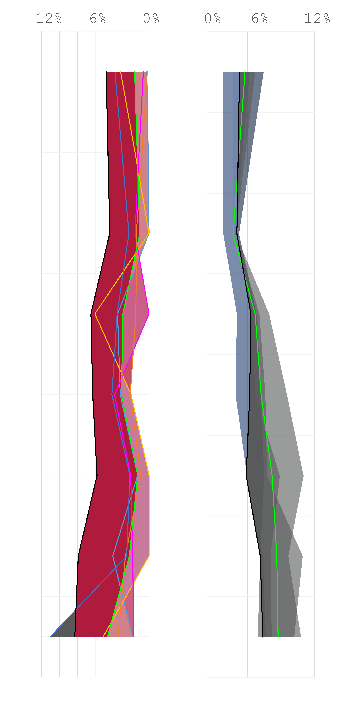

The 2016 US Presidential Election marked a turning point in American politics. For the first time, a political outsider was elected to the nation's highest office. Donald Trump's surprise victory over Hillary Clinton shocked people across the political spectrum for both its unprecedentedness and improbability. Donald Trump's lack of political experience, inflamatory rhetoric, and nearly continuous scandals had led many pundits to declare that Hillary Clinton would easily triumph. After his upset victory, experts began to investigate Trump voters and why they voted for him. Common explanations cite a decline in manufacturing employment, increasing economic inequality, immigration concerns, and nationalism as reasons for Trump's victory.Trump's campaign slogan "Make America Great Again" has come to stand for many of these ideas, at least in the minds of his supporters.
Competing Candidates. Competing Campaign Slogans.
What Does'Great Again!' Actually Mean To Voters?
To Trump's supporters, the phrase "Make American Great Again!" encapsulates the idea that America has declined from its peak and that with the right leadership, it could again become a dominant world power where citizens could expect substantial increases in quality of life. To Trump opponents, the phrase conotes the racism and sexism of America's past. Trump himself has stated that in his mind, America was great "after World War 1 and in the 1950's". Survey results suggest that most voters view either the 1950's or the 1980's as American's 'Greatest' period.
<
Source: The Atlantic
People think the 1950s, 1980s, and 1990s were good...
But Was America Greater?
Data can provide an answer
If America was in fact better in the 1950s, 80s, or 90s, it makes sense to investigate the changes that have taken places in areas that were highly supportive of Trump in the election. Election results are typically spatially presented at the county level and this piece focuses on the 5 most 'Pro-Trump' counties. For comparison's sake, the 5 most 'Pro-Clinton' coumties are also analysed. Demographic and economic data from the past 60 years provides a high level insight into how these places have changed since 1950.
In each candidate's top 5 most supportive counties...
We can see how they've changed since 1950 according to the following metrics:
Population Density
Unemployment Rate
Average Family Income
Population Percentage with Some College Education
But these counties are vastly different places
The population of pro-Clinton counties is over 1,000 times that of pro-Trump counties
Instead, let's look only at the most populous places that voted heavily for each candidate
The counties displayed below are the 5 most-populous counties from the pool of counties where 70 percent or more of the vote went to either candidate. In political terms, a 70 percent vote share is dominant and indicates extremely high levels of support for a politician or party.
These counties provide a picture of how change has affected a wider swathe of the population
*There's still a big population difference though
Let's compare each metric more closely
Pop. Density

Conclusions
America is becoming more crowded
Average incomes are increasing
People are more educated
Unemployment has grown
Does this really mean that it was great in the past?
In general, America appears to have improved from 1950 till 2015. In fact, these 5 pro-Trump counties have improved more in terms of , relative to pro-Hilary counties, because they all had a lower starting point than pro-Hilary counties.
Pro-Trump counties have a higher level of education and on average, a lower rate of unemployment rate. A striking difference between the two sets of counties is their population densities, which are much higher for pro-Hilary counties, indicating that the rural-urban divide is very real. Based on the data above, it seems that contrary to an Trump’s campaign slogan, America is at its greatest now, and is doing better than it was in the 1950s, ‘80s, or 90’s.
With regards to the 2016 presidential election, this analysis does not provide conclusive evidence for the ideas behind the slogan ‘Make America Great Again!’. Perhaps, in his campaign, the President tapped into something that the data analysed here cannot explain. Deeper or more psycho-analytic research is needed to explain the widespread popularity of his slogan, and ultimately, his election victory.